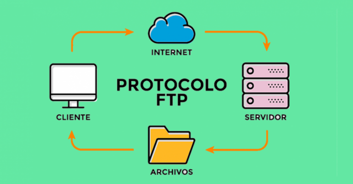
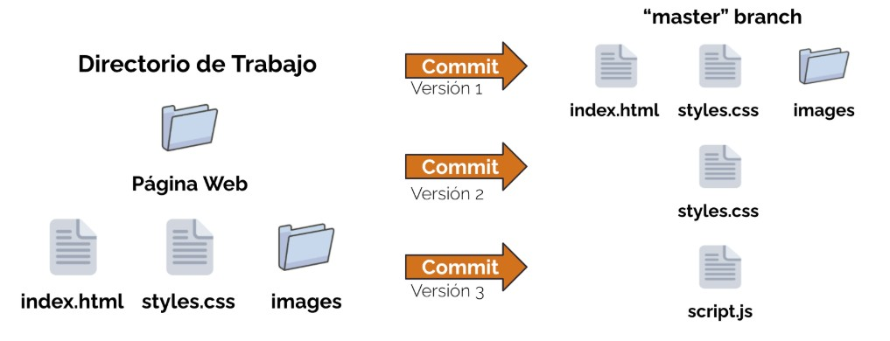
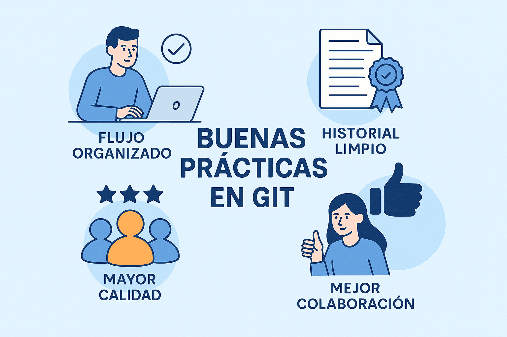
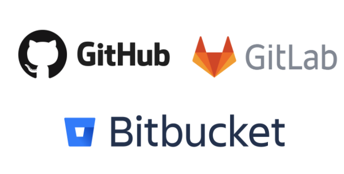
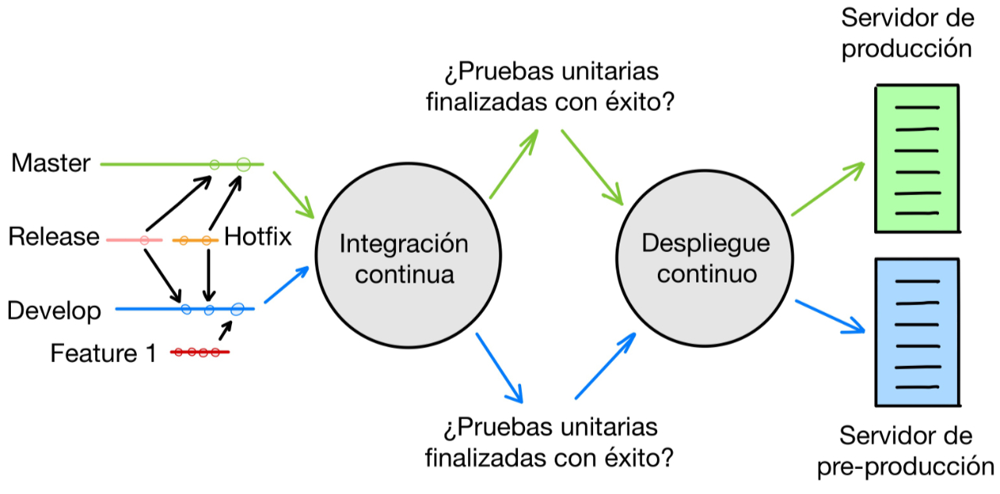

Domain Name System (DNS)
El DNS es un sistema que traduce nombres de dominio en direcciones IP. El cliente envía una solicitud al servidor DNS, que responde con la dirección IP correspondiente.
- Tipos de registros: A (direcciones IP), CNAME (alias), MX (correos)
- Zonas directas e inversas: la zona directa traduce nombres a IP, la inversa traduce IP a nombres

Autenticación y control de acceso
Apache permite proteger directorios mediante autenticación básica, digest o LDAP.
htpasswdpara crear usuarios- Requiere HTTPS para seguridad
FTP y SFTP (Transferencia de archivos)
FTP es un protocolo antiguo que transmite datos en texto plano, lo que lo hace inseguro para transferir archivos a servidores remotos. SFTP, por otro lado, es una opción segura que utiliza cifrado sobre SSH (puerto 22) para proteger la transferencia de datos.
Para transferir archivos a un servidor remoto: SFTP es la opción segura.
- FTP: texto plano
- SFTP: cifrado sobre SSH (puerto 22)

Documentación técnica
La documentación técnica explica cómo instalar, configurar y ejecutar un proyecto. Debe permitir que cualquier desarrollador pueda reproducir el entorno sin dificultad. Es esencial en despliegues, mantenimiento de servidores y entregas profesionales.
- Instrucciones de instalación paso a paso.
- Requisitos del sistema y dependencias.
- Configuraciones especiales (Apache, Tomcat, BBDD).
- Estructura del proyecto y rutas relevantes.
Documentación del código
Documentar el código significa explicar lo necesario para que un tercero pueda entender qué hace cada función, clase y módulo. No se trata de describir lo obvio, sino de aclarar la intención, flujos y decisiones técnicas.
- Comentarios claros y breves.
- Nombres descriptivos en variables y funciones.
- Explicación de bloques complejos.
- Uso de estándares como docstrings o PHPDoc.
def generar_usuario(nombre, rol):
"""
Genera un usuario del sistema con el rol especificado.
Parámetros:
nombre (str): nombre del usuario
rol (str): rol asignado (admin, editor, lector)
"""
return {"nombre": nombre, "rol": rol}Control de versiones con Git
¿Qué es Git?
Git es un sistema de control de versiones distribuido que permite rastrear los cambios en los archivos y coordinar el trabajo en equipo.

Git permite registrar cada cambio realizado en un proyecto, retroceder si algo falla y trabajar en equipo sin sobrescribir archivos. Es una herramienta imprescindible en cualquier entorno de desarrollo moderno.
- Registra el historial de cambios.
- Permite trabajar con ramas para nuevas funcionalidades.
- Facilita la colaboración entre varios desarrolladores.
- Garantiza trazabilidad y control.
Buenas prácticas con Git
Para aprovechar Git correctamente es importante seguir normas que faciliten el trabajo en equipo y la comprensión del proyecto a largo plazo.

Repositorios remotos
Un repositorio remoto es una versión del proyecto alojada en un servidor externo (GitHub, GitLab, Bitbucket). Permite colaborar con otros desarrolladores, mantener copias de seguridad y trabajar desde cualquier lugar.
Los repositorios remotos permiten:
- Guardar proyectos de forma centralizada.
- Compartir el repositorio con el equipo.
- Crear issues, wikis y documentación.
- Integración con pipelines y automatizaciones.

Integración continua (CI)
Es la práctica de integrar cambios en el código de forma frecuente y automatizada. Consiste en ejecutar pruebas, análisis de calidad y despliegues cada vez que se actualiza el repositorio, asegurando que el software se mantiene en un estado funcional.
- Automatiza pruebas en cada commit.
- Detecta errores antes de desplegar.
- Herramientas: Jenkins, GitHub Actions, GitLab CI.
